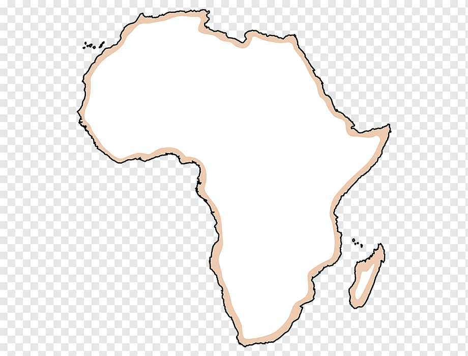
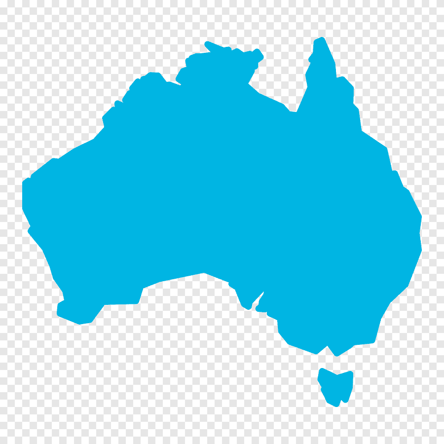
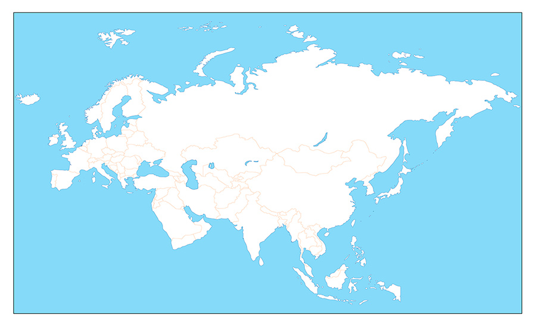
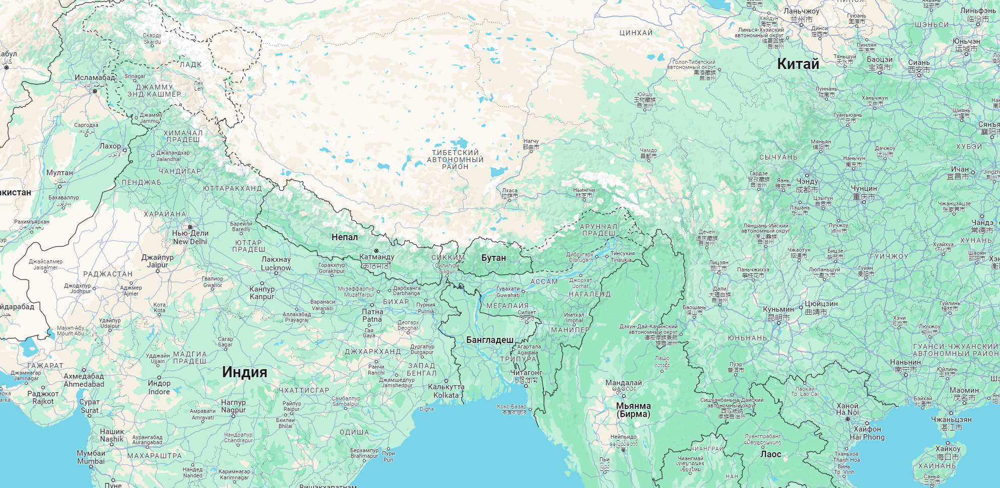

ТЕСТ ПО ГЕОГРАФИИ
1. Какой из этих городов является столицей Франции?
1. Лондон
2. Париж
3. Рим
2. Какие из перечисленных океанов окружают Австралию?
1. Тихий океан
2. Индийский океан
3. Северный Ледовитый океан
3. Какой самый высокий горный хребет в мире?
1. Гималаи
2. Альпы
3. Анды
4. В каком году произошло открытие Америки Колумбом?
5. Укажите страны, через которые проходит экватор.
1. Бразилия
2. Кения
3. Индонезия
6. Расположите города по численности населения в порядке убывания:
Выберите город
Токио
Москва
Нью-Йорк
Выберите город
Токио
Москва
Нью-Йорк
Выберите город
Токио
Москва
Нью-Йорк
7. На каком континенте находится самая крупная пустыня в мире - Сахара?
1. Африка
2. Австралия
3. Южная Америка
8. Какое изображение на карте представляет континент Африка?



9. Нажмите на место, где расположен Эверест.

10. Какая из перечисленных стран имеет выход к морю?
1. Россия
2. Боливия
3. Швейцария
11. В каком году была проведена первая олимпиада нового времени?
12. Какой из перечисленных городов является столицей Японии?
1. Сеул
2. Пекин
3. Токио
13. Какая из перечисленных рек является самой длинной в мире?
1. Нил
2. Амазонка
3. Янцзы
14. Укажите страны, через которые проходит Великая Гималайская Горная Система.
1. Индия
2. Непал
3. Китай
15. Какой из перечисленных островов является самым крупным в мире?
1. Мадагаскар
2. Гавайи
3. Гренландия